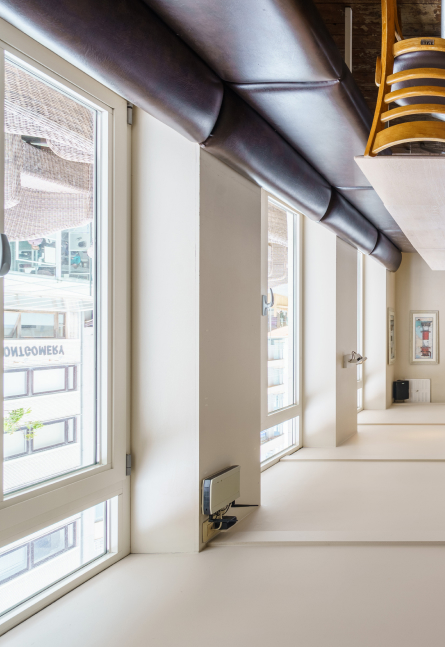

<section class="gallery">
  <div class="container gallery__container">
    <h2 class="title gallery__title">Sfeerfoto's</h2>
    <p class="gallery__text descr">
      De beste manier om de sfeer te ervaren is eens langskomen.
      In tussentijd hebben we hier alvast wat foto’s voor je klaar.
    </p>

   <div class="gallery__wrapper">
      <div class="news-wrapper">
        <button class="btn-reset news-btn news-btn--gallery-prev">
          <svg>
            <use xlink:href="img/sprite.svg#left"></use>
          </svg>
        </button>

        <div class="news-slider-gallery swiper">
          <div class="swiper-wrapper news-slider-gallery__container">
            <div class="swiper-slide gallery__slides">
              <div class="gallery__slide">
                
              </div>
            </div>
            <div class="swiper-slide gallery__slides">
              <div class="gallery__slide">
                
              </div>
            </div>
            <div class="swiper-slide gallery__slides">
              <div class="gallery__slide">
                
              </div>
            </div>
          </div>
        </div>


        <button class="btn-reset news-btn news-btn--gallery-next">
          <svg>
            <use xlink:href="img/sprite.svg#right"></use>
          </svg>
        </button>
      </div>
   </div>

  </div>
</section>